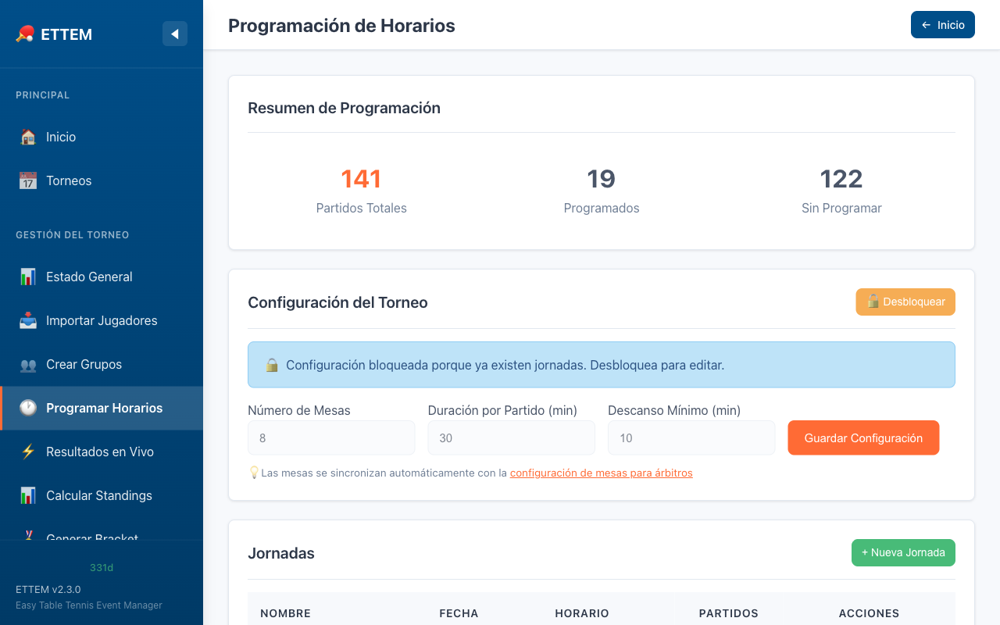
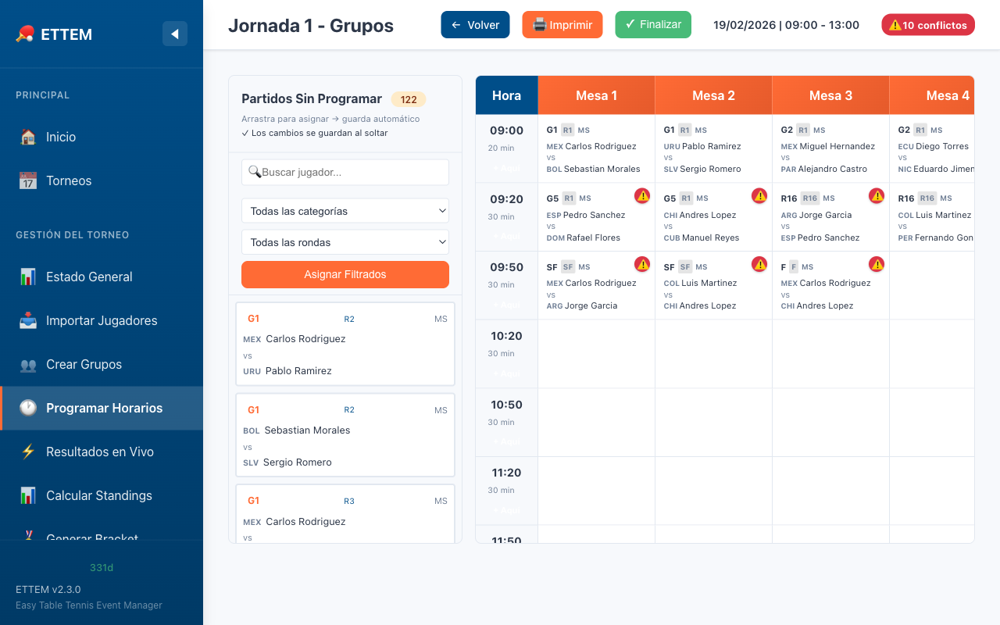

Scheduler
Organiza los partidos por mesa y hora con el planificador visual de sesiones.
¿Qué es el Scheduler?
El Scheduler es el módulo de planificación de ETTEM que te permite asignar cada partido a una mesa y un horario específico. El resultado es una cuadrícula visual (mesa × franja horaria) que puedes imprimir y distribuir a los árbitros y jugadores.

Paso 1 — Configurar las Mesas
Antes de crear una sesión, debes configurar cuántas mesas tiene el recinto y cómo se llaman. Para hacerlo:
- Ve al menú Scheduler desde el panel de administración.
- Haz clic en Configurar Mesas.
- Indica la cantidad de mesas disponibles.
- Opcionalmente, asigna un nombre a cada mesa (por defecto se llaman “Mesa 1”, “Mesa 2”, etc., pero puedes personalizar: “Mesa Olímpica”, “Mesa Azul”, “Pista 1”, etc.).
- Guarda la configuración.
Paso 2 — Crear una Sesión
Una sesión representa un bloque de tiempo de juego (por ejemplo: “Mañana Grupos”, “Tarde Bracket”, “Ronda de Cuartos”). Para crear una sesión:
- En el Scheduler, haz clic en Nueva Sesión.
-
Completa los datos:
- Nombre: nombre descriptivo de la sesión.
- Hora de inicio: hora en que comienza el primer partido (p. ej. 09:00).
- Duración por franja: cuántos minutos dura cada franja horaria (p. ej. 20 min).
- Número de franjas: cuántas franjas tiene la sesión (p. ej. 12 franjas = 4 horas).
- Guarda. La sesión aparece en la lista y su cuadrícula queda disponible para asignar partidos.
Paso 3 — Asignar Partidos a la Cuadrícula
La cuadrícula muestra las mesas como columnas y las franjas horarias como filas. Cada celda corresponde a un slot mesa × hora.

Para asignar un partido:
- Haz clic en una celda vacía de la cuadrícula.
- Selecciona el partido de la lista de partidos pendientes.
- El partido queda asignado a esa mesa y esa franja horaria.
Para reasignar o quitar un partido:
- Haz clic en la celda con el partido asignado para cambiar la asignación.
- Selecciona “Quitar” para dejar la celda libre.
Monitoreo en Vivo desde el Panel
Desde el panel de administración puedes ver en tiempo real el estado de cada partido asignado en la sesión activa:
- Pendiente: el partido aún no ha comenzado.
- En progreso: el partido está siendo jugado.
- Completado: el resultado ya fue ingresado.
La vista de monitoreo se actualiza automáticamente cada 10 segundos, sin necesidad de recargar la página.
Finalizar y Reabrir Sesiones
Una vez que todos los partidos de una sesión han concluido, puedes finalizar la sesión para marcarla como terminada. Esto la archiva en el historial y libera la vista de la cuadrícula para la siguiente sesión.
- Finalizar sesión: haz clic en el botón “Finalizar Sesión” en la parte superior de la cuadrícula. La sesión queda marcada como completada.
- Reabrir sesión: si necesitas hacer correcciones, puedes reabrir una sesión finalizada desde el historial de sesiones.
Imprimir el Scheduler
Puedes imprimir la cuadrícula completa o una sesión específica para distribuir a árbitros y jugadores. Desde la cuadrícula, haz clic en Imprimir o ve al Centro de Impresión y selecciona la sesión que quieres imprimir.
El documento impreso incluye el nombre de la sesión, las mesas, las franjas horarias y los partidos asignados con los nombres de los jugadores o equipos.